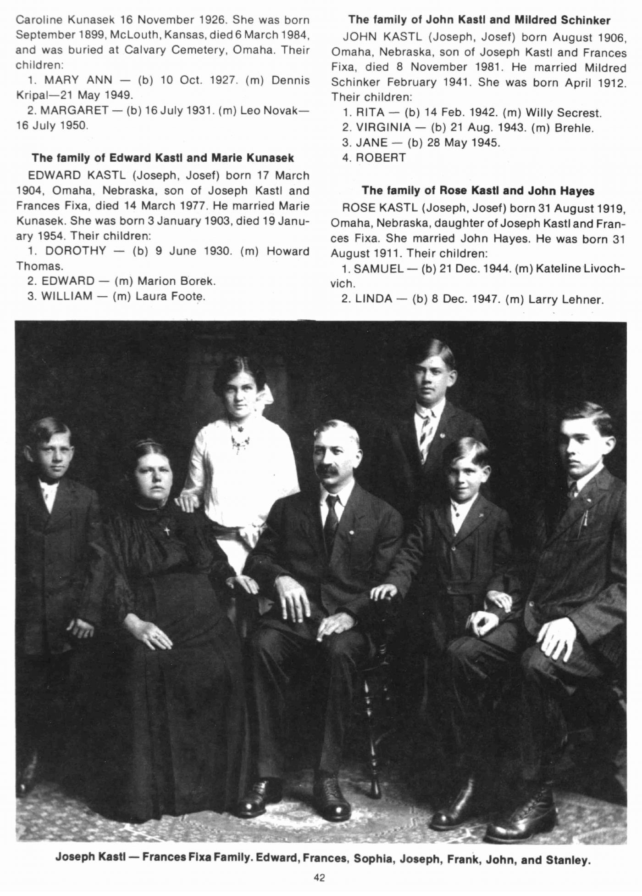

The book · The Family of Joseph Kastl
Page 42 The family of Edward Kastl and Marie Kunasek


Transcription
Caroline Kunasek 16 November 1926. She was born September 1899, McLouth, Kansas, died 6 March 1984, and was buried at Calvary Cemetery, Omaha. Their children:
- MARY ANN — (b) 10 Oct. 1927. (m) Dennis Kripal—21 May 1949.
- MARGARET — (b) 16 July 1931. (m) Leo Novak—16 July 1950.
The family of Edward Kastl and Marie Kunasek
EDWARD KASTL (Joseph, Josef) born 17 March 1904, Omaha, Nebraska, son of Joseph Kastl and Frances Fixa, died 14 March 1977. He married Marie Kunasek. She was born 3 January 1903, died 19 January 1954. Their children:
- DOROTHY — (b) 9 June 1930. (m) Howard Thomas.
- EDWARD — (m) Marion Borek.
- WILLIAM — (m) Laura Foote.
The family of John Kastl and Mildred Schinker
JOHN KASTL (Joseph, Josef) born August 1906, Omaha, Nebraska, son of Joseph Kastl and Frances Fixa, died 8 November 1981. He married Mildred Schinker February 1941. She was born April 1912. Their children:
- RITA — (b) 14 Feb. 1942. (m) Willy Secrest.
- VIRGINIA — (b) 21 Aug. 1943. (m) Brehle.
- JANE — (b) 28 May 1945.
- ROBERT
The family of Rose Kastl and John Hayes
ROSE KASTL (Joseph, Josef) born 31 August 1919, Omaha, Nebraska, daughter of Joseph Kastl and Frances Fixa. She married John Hayes. He was born 31 August 1911. Their children:
- SAMUEL — (b) 21 Dec. 1944. (m) Kateline Livochvich.
- LINDA — (b) 8 Dec. 1947. (m) Larry Lehner.

People from the line of descent on this page
- Frank Kastl 1900–1976
- Sophie Kastl b. 1902
- Edward Kastl 1904–1977
- John R. Kastl 1906–1981
- Rose Kastl b. 1919
Transcriber’s notes
Opens mid-sentence, continuing the Frank Kastl entry from the previous page ('He married / Caroline Kunasek...'). Wide photo spans both columns in lower ~60% of page. John Kastl's child 4. ROBERT has no further data printed; child 2 of John Kastl given only as '(m) Brehle.' as printed. Caption spells 'Sophia' whereas the text has 'SOPHIE'.